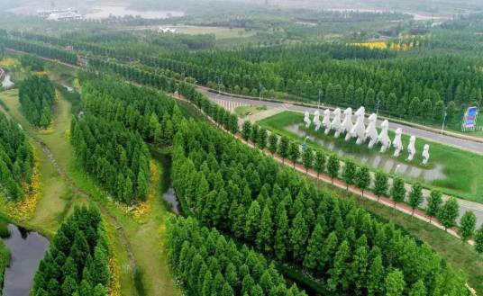
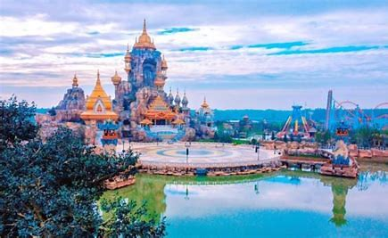
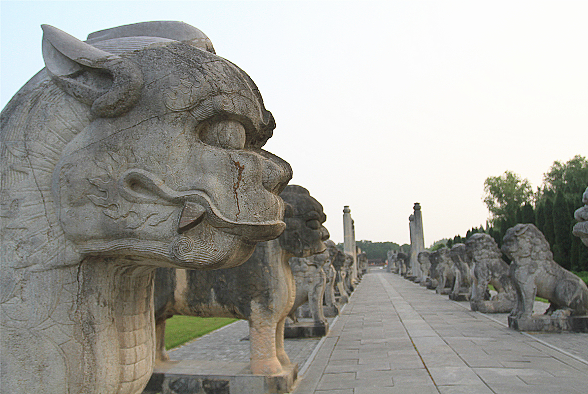
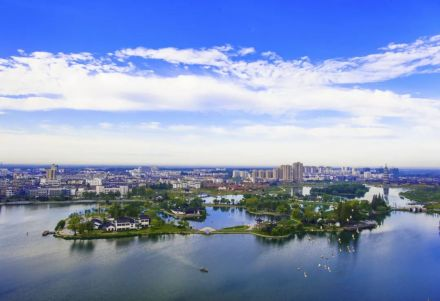

风景名胜
洪泽湖古堰景区洪泽湖古堰景区：国家4A级景区，位于中国第四大淡水湖——洪泽湖畔。景区主要包括洪泽湖大堤、水釜城、渔人湾等旅游片区，是一个融文化体验、养生休闲、大湖观光、现代游乐于一体的综合性生态文化旅游景区。 >>> |
|---|
淮安荷花荡国家4A级旅游景区，位于江苏省淮安市盱眙县城区北部，得名于米芾所题“第一山”，是国家4A级旅游景区。景区内有数十个景点：少游憩园、荷博园、荷文化体验馆、水草世界·农事体验馆、百荷园等。 >>> |
|

淮安白马湖旅游度假区国家4A级景区，位于江苏省淮安市清江浦区白马湖环湖大道1号。景区以“生态自然”为核心特质，将“一见清心”作为品牌形象定位，包含一品梅园、菊世无双、三岛奇遇记、嗨皮西提生态乐园、卡丁车竞技中心、国际房车露营基地、火星遗迹、哎呀马、全地形越野车、彩虹滑道等优质旅游体验产品。每年10月至11月举办的菊花展已成为江苏省三大菊展之一，是淮安市“最受市民欢迎景区”。 >>> |
|

淮安西游记主题乐园国家4A级景区，位于江苏省淮安市清江浦区翔宇大道109号。总占地560亩，建筑面积6.6万平方米，分为9个区，分别对应《西游记》里的四大部洲、师徒四人和作者吴承恩。项目借助《西游记》蕴藏的娱乐元素，结合现代游乐设备和观演体验，设计打造33个游乐项目，以及花车巡游、闭园秀等46场氛围演绎项目，将花果山、高老庄、雷音寺等老场景用新技术多维度呈现，建成集“娱乐性、体验性、科技性”于一体的一流主题公园。 >>> |
|

淮安明祖陵遗址公园国家3A级景区，位于江苏省淮安市盱眙县明祖陵村。明祖陵是明太祖朱元璋的高祖朱百六、曾祖朱四九、祖父朱初一三代的衣冠冢，也是其祖父的实际殁葬地。明祖陵历时28年之久才大致完备，有城墙三道，21对神道石刻，金水桥三座，殿、亭、楼、阁千间。明祖陵建造规制与神道21对石刻继承唐宋风格，是朱元璋重树中原正统儒家文化的重要载体。 >>> |
|

涟水五岛湖旅游区国家4A级景区，位于江苏省淮安市涟水县红日大道与府前路交汇处。包括五岛湖公园、能仁寺景区、涟水县博物馆三大板块，占地面积约65.9公顷，其中水域面积约38.5公顷，陆地面积约27.4公顷，是融合人文自然、历史文化、名人文化、佛禅文化于一体的复合型旅游景区。城中有湖，湖中有岛，岛上有白鹭，景区形成了“城在水中、水在城中”的特有神韵。 >>> |
周恩来纪念馆周恩来纪念馆于1988年3月兴建，1992年1月6日落成并对外开放，馆名由邓小平同志题写。1998年为纪念周恩来诞辰100周年，增建了仿北京中南海西花厅和周恩来铜像广场。2008年为纪念周恩来诞辰110周年，增建了周恩来生平业绩陈列馆。 >>> |
淮安里运河文化长廊国家4A级景区，位于江苏省淮安市清江浦区里运河文化长廊。里运河文化长廊北起大闸口、南至堂子巷，总范围45平方公里，核心区总长度15.6公里，面积约10.8平方公里，大小项目数百个，总投资260亿元。 >>> |
淮安水上森林公园淮安市金湖水上森林，淮安市境内4A旅游景点。 [1]景区为省级水利风景区，占地1.2万亩，有“天然氧吧”之美誉，是华东地区首个集休闲度假、温泉养生、森林探险等功能于一体的大型森林旅游综合体。景区建有田园牧歌、树屋部落、清境江湖、活力森林、文创养生、水上迷宫等六大片区，分布着童话魔幻农场、五彩创意田园、树梢王国、玻璃栈道、水上嘉年华、杉杉迷宫、森林集市等数十个景点，并配套房车营地、树屋、森林之泉温泉酒店、水上餐厅等精品餐宿服务设施。 >>> |